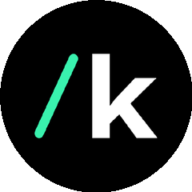

今日 GitHub 涨星王
AI 替你跑求职
找工作这件个性化的事 居然能整成框架
| 00| 25| 50| 75| 99
#01
AI 求职框架
AI 替你跑求职全流程
MadsLorentzen / ai-job-search

Fork 即用的求职框架 · AI 评估岗位 改简历 写求职信 练面试
Fork 3628
TypeScript
即用框架
把求职这件个性化的事 整成了可跑的框架
AI 替你跑的四件事
评估岗位匹配
改简历
写求职信
练面试
Fork 它 填好你的简历 AI 替你跑完求职全流程
连续霸榜
Zackriya-Solutions / meetily
+1781 ★
本地会议纪要不上云 · 又涨了近一千八
100m80m60m40m20m
#03
端侧语音合成
不用 GPU 不调 API
kyutai-labs / pocket-tts

一百兆参数塞进 CPU 跑 · 端侧语音合成值得关注
100M 参数
CPU 6x 实时
半可用
TTS 通常吃 GPU 或调云 API 这个 CPU 直接跑
CPU
100M
参数量
6×
实时速度
不用 GPU 不调 API 速度还能到六倍实时
iOfficeAI / OfficeCLI
单文件免装 Office · 给 AI 用
$ officecli read doc.docx
→ AI 批量读取 Word 文档
$ officecli read sheet.xlsx
→ AI 批量读取 Excel 表格
TencentCloud / CubeSandbox
大厂亲自下场 · 给 AI agent 隔离环境
◇
即时
并发
安全
轻量
#收尾
AI 编程技能库
生产级工程技能
addyosmani / agent-skills

给 AI 编程 agent 存的工程技能库 · 像程序员积累套路
spec
tdd
review
debug
plan
ship
agent 也要技能库沉淀经验 工程沉淀的踏实感
今日六项 你最想用哪个
你最想用哪个 来替你跑流程？
AI 替你跑求职 · 端侧 TTS · Office 命令行 · 沙盒 · 技能库